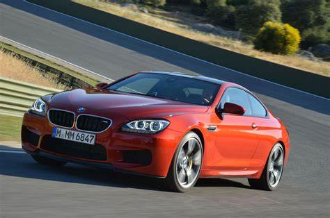

he BMW M6 is a high-performance version of the 6 Series marketed under the BMW M sub-brand from 1983 to 2018 (with a break from 1990 to 2004). Introduced in the coupe body style, the M6 was also built in convertible and fastback sedan ('Gran Coupe') body styles for later generations. An M6 model was built for each of the first three generations of the 6 Series. Production of the M6 ended in 2019 and it was replaced by the BMW M8 (F91/F92/F93) in 2019.
1. Design by primarily by Nader Faghihzadeh
2. 3.0 liter twin turbo inline six engine
3. Max. output: 560 hp
4. Max. speed: 155-189 mp/h